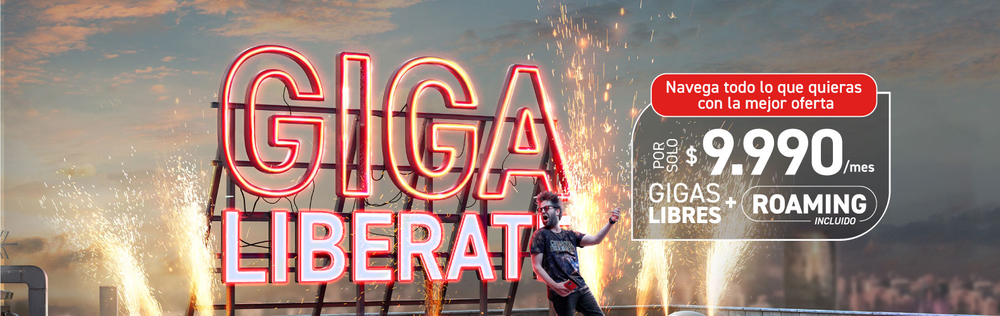

RUSIA Y UCRANIA LO ULTIMO 20 SEPTIEMBRE 2022 (GUERRA UCRANIA Noticias 2022).
#css #responsive


Coldplay ilumina la noche en emotivo reencuentro con Chile
En el regreso de los megaconciertos al Estadio Nacional, el grupo británico despegó un espectáculo diseñado como una experiencia de luces, confeti y un repertorio diverso que repasó su trayectoria. Con simpatía, Chris Martin y compañía encantaron en la primera de sus cuatro noches por Santiago.

Pasaron casi tres años desde la última vez que el Estadio Nacional recibió un megaconcierto. Fue el 15 de octubre de 2019 cuando los ingleses Iron Maiden marcaron un largo adiós potenciado por la pandemia y la acuciante falta de salas de concierto en la capital. De allí que el primero de los cuatros shows sold out que Coldplay agendó en el Coliseo de Ñuñoa (20, 21, 23 y 24 de septiembre) estaba marcado por el tono del reencuentro; mas con la cancelación del show de Justin Bieber, a comienzos del mes. Una vuelta a esos días en que asistir a un show internacional era un acontecimiento que marcaba la pauta diaria. Y se extrañaban.
A su tercera visita al país, Coldplay llegó como un amigable monstruo de estadios. “La banda más grande del mundo durante algunos años”, los definió The Guardian a propósito de las presentaciones en Londres de la gira Music of the Spheres que los trae en esta ocasión.
La previa estuvo marcada por las animadas presentaciones de Princesa Alba y Camila Cabello, a tono con la presencia juvenil en la audiencia, familias con niños incluidos. Pese al frio, la noche cerrada ofreció el marco para el despliegue de las luces de los teléfonos como un anticipo del espectáculo. Y en las pantallas, pequeños mensajes de iniciativas ambientales recordaban el ánimo de una gira amigable con el medio ambiente.
NOTICIAS INTERNACIONALES